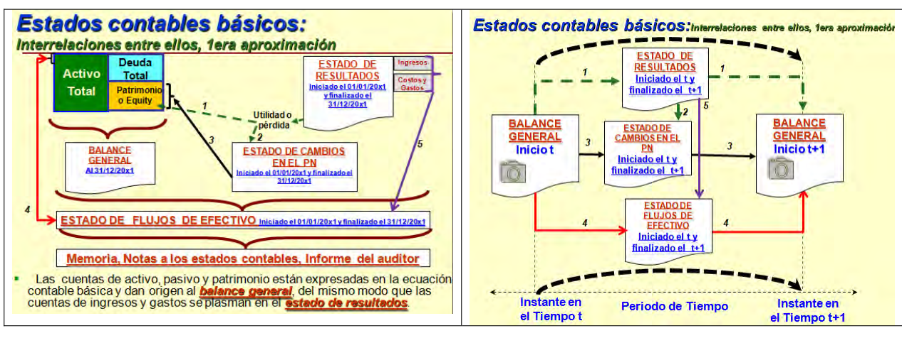

Mencione los 4 (cuatro) estados Contables Básicos y cómo se interrelacionan entre sí Los 4 EC son:
▲
Respuesta y Criterio de Cátedra:

🔍 Clic para ampliar esquema de cátedra en alta definición
- Balance General ó Estado de Situación Patrimonial (BG)
- Cuadro de Resultados (CR)
- Estado de Evolución del Patrimonio Neto (EPN)
- Estados de cambios de Flujos de Efectivo (EFE)
Interrelaciones:
- El Balance General (BG), se relaciona con el Estado de resultados (CR) y la Utilidad Neta del Ejercicio (Va en el BALANCE
como “resultados del ejercicio” dentro del patrimonio neto)
- El Estado de resultados (CR) se relaciona con el Estado de Cambio del Patrimonio Neto (EPN), la utilidad (Perdida) neta del
ejercicio final del Estado de resultados debe ser la misma que figura en Estado de Cambio del Patrimonio Neto (EPN).
- El Balance General se relaciona con el Estado de Cambio del Patrimonio Neto (EPN) en el Total Patrimonio (EQUITY), es
decir el Total patrimonio que resulta en el Estado de Cambio del Patrimonio Neto (EPN) , viene a hacer la suma de capital el
resultado del ejercicio.
- El Balance General (BG) se relaciona con el Estado de Flujo de Efectivo (EFE), ya que éstos deben coincidir, es decir, el saldo de efectivo y equivalente de efectivo del Estado de Flujo de Efectivo debe ser el mismo que tenemos en el rubro Caja y
Bancos del Balance General.(BG)
- Los gastos e ingresos del Estado de Resultados (CR) se relacionan con el Estado de Flujo de Efectivo (EFE) en particular en
las actividades de operación.